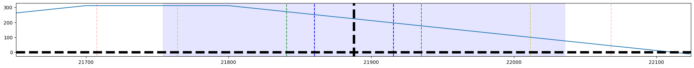
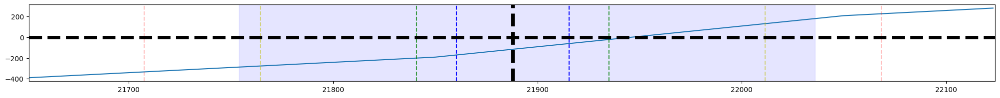

Genetic Algorithms for Options Strategy Optimization#
from tqdm.notebook import trange
import requests as r
from typing import List, Dict, Any, Tuple
from option_history import get_option_chain, get_history
import pandas as pd
import matplotlib.pyplot as plt
import numpy as np
import mibian
from opstrat.helpers import payoff_calculator
from datetime import datetime
today = datetime.now().strftime("%Y%m%d")
def payoff_calculator(x, op_type, strike, op_pr, tr_type, n):
y = []
if op_type == 'c':
for i in range(len(x)):
y.append(max((x[i]-strike-op_pr), -op_pr))
else:
for i in range(len(x)):
y.append(max(strike-x[i]-op_pr, -op_pr))
y = np.array(y)
if tr_type == 's':
y = -y
return y*n
def generate_strategy(
odf,
margins_df,
n_options=5,
quantities=list(range(1, 11)),
position_types=[
'buy',
'sell'
],
lot_size=50,
):
test_strategy = []
for _ in range(np.random.randint(1, n_options+1)): # no of strike prices
[strike_price, right, ltp_] = odf[
['strike_price', 'right', 'ltp']
].sample().values[0]
pos = np.random.choice(position_types)
qty = np.random.choice(quantities)
margin = ltp_ * qty * lot_size
if pos == 'sell':
margin = margins_df[
(margins_df['strike_price'] == strike_price) &
(margins_df['right'] == right)
]['span_margin_required'].values[0] * qty
test_strategy.append((strike_price, pos, right, qty, ltp_, margin))
trades_columns = ['strike_price', 'action',
'right', 'qty', 'ltp', 'funds_required']
trades_df = pd.DataFrame(test_strategy, columns=trades_columns)
trades_df.qty = trades_df.action.map(
{'buy': 1, 'sell': -1}) * trades_df.qty
trades_df.funds_required = trades_df.action.map(
{'buy': 1, 'sell': -1}) * trades_df.funds_required
trades_df = trades_df.groupby(['strike_price', 'right']).agg({
'qty': 'sum',
'ltp': 'mean',
'funds_required': 'sum',
}).reset_index()
trades_df['action'] = trades_df.qty.apply(
lambda x: 'buy' if x > 0 else 'sell')
trades_df['qty'] = trades_df.qty.abs()
trades_df['funds_required'] = trades_df.funds_required.abs()
return trades_df[trades_df['qty'] > 0][trades_columns].to_records(index=False).tolist()
def calculate_margins(odf):
responses = []
for row in odf.to_dict('records')[:]:
resp = r.post(
'http://localhost:4003/margins',
json={
"lists": [{
'strike_price': row['strike_price'],
'right': row['right'],
'expiry_date': row['expiry_date'],
'price': row['ltp'],
'quantity': 50,
"product": "options",
'action': 'sell',
"stock_code": "NIFTY",
"fresh_order_type": "Y",
}],
"exchange_code": "NFO",
},
headers={
'content-type': 'application/json',
}
).json()['Success']
responses.append(resp)
for row in responses:
row.update(row['margin_calulation'][0])
del row['margin_calulation']
margins_df = pd.DataFrame(responses)
margins_df[['strike_price', 'span_margin_required']
] = margins_df[['strike_price', 'span_margin_required']].astype(float)
return margins_df
def ltp(df, strike_price, right):
return df[
(df['strike_price'] == strike_price) &
(df['right'] == right)
][['ltp', ]].mean(axis=1).round(2).values[0]
def greeks(odf, curr_price, strike_price, days_to_expiry, right):
volatility = mibian.BS(
[
curr_price,
strike_price,
0,
days_to_expiry
],
callPrice=ltp(odf, strike_price, 'Call') if 'call' == right else None,
putPrice=ltp(odf, strike_price, 'Put') if 'put' == right else None,
).impliedVolatility
option_greeks = mibian.BS(
[
curr_price,
strike_price,
0,
days_to_expiry
],
volatility=volatility,
callPrice=ltp(odf, strike_price, 'Call') if 'call' == right else None,
putPrice=ltp(odf, strike_price, 'Put') if 'put' == right else None,
)
return {
'delta': option_greeks.callDelta if 'call' == right else option_greeks.putDelta,
'gamma': option_greeks.gamma,
'vega': option_greeks.vega,
'theta': option_greeks.callTheta if 'call' == right else option_greeks.putTheta,
'rho': option_greeks.callRho if 'call' == right else option_greeks.putRho,
'volatility': volatility,
}
def score(spot, row, qvals):
[q05, q25, q50, q75, q95] = qvals
_score = 0
if row['strike_price'] >= spot - q95 and row['strike_price'] <= spot + q95:
_score += 1
if row['strike_price'] >= spot - q75 and row['strike_price'] <= spot + q75:
_score += 1
if row['strike_price'] >= spot - q50 and row['strike_price'] <= spot + q50:
_score += 1
if row['strike_price'] >= spot - q25 and row['strike_price'] <= spot + q25:
_score += 1
if row['strike_price'] >= spot - q05 and row['strike_price'] <= spot + q05:
_score += 1
return _score/5
def evaluate_strategy(
strike_range: Tuple[int, int],
strategies: List[Tuple[float, str, str, int, float, float]],
):
nifty_range = range(
int(strike_range[0]),
int(strike_range[1])
)
y = 0
trade_records = []
for strike_price, action, right, qty, ltp_, margin in strategies:
trade_records.append(
{
'strike_price': strike_price,
'action': action,
'right': right,
'qty': qty,
'ltp': ltp_,
'funds_required': margin,
}
)
points = payoff_calculator(
nifty_range,
right[:1].lower(),
strike_price,
ltp_,
action[:1],
qty
)
y += np.array(
points
)
return pd.DataFrame(
{
'strike_price': nifty_range,
'payoff': y,
}
), pd.DataFrame(trade_records)
def fitness(ind, n_range, spot_price, q_vals):
payoffs, trades_df = evaluate_strategy(
n_range,
ind,
)
strategy_cost = trades_df.groupby(['strike_price', 'action'])[
'funds_required'].max().sum()/1e6
payoffs['score'] = payoffs.apply(lambda x: score(
spot_price, x, q_vals), axis=1)
scoring = payoffs.groupby(
'score')['payoff'].quantile([.05]).unstack() // 20
profit_scores = scoring.T.values[0].tolist()
return profit_scores+[strategy_cost, ]
def showcase(strategy, curr_price, q_vals, lower_range, upper_range, lower, higher):
[q05, q25, q50, q75, q95] = q_vals
payoffs, trades_df = evaluate_strategy(
(lower_range, upper_range),
strategy,
)
payoffs['score'] = payoffs.apply(lambda x: score(
curr_price, x, [q05, q25, q50, q75, q95]), axis=1)
_, ax = plt.subplots(figsize=(25, 2))
vis_range = 5
ax.plot(payoffs.strike_price, payoffs.payoff)
ax.axvline(curr_price, color='k', linestyle='--', lw=5)
ax.axvline(curr_price+q05, color='b', linestyle='--', alpha=.95)
ax.axvline(curr_price-q05, color='b', linestyle='--', alpha=.95)
ax.axvline(curr_price+q25, color='g', linestyle='--', alpha=.75)
ax.axvline(curr_price-q25, color='g', linestyle='--', alpha=.75)
ax.axvline(curr_price+q50, color='y', linestyle='--', alpha=.5)
ax.axvline(curr_price-q50, color='y', linestyle='--', alpha=.5)
ax.axvline(curr_price+q75, color='r', linestyle='--', alpha=.25)
ax.axvline(curr_price-q75, color='r', linestyle='--', alpha=.25)
ax.axvline(curr_price+q95, color='m', linestyle='--', alpha=.1)
ax.axvline(curr_price-q95, color='m', linestyle='--', alpha=.1)
ax.axvspan(curr_price+lower, curr_price + higher, alpha=0.1, color='b')
# ax.axvspan(curr_price+lower, curr_price + higher, alpha=0.1, color='b')
ax.axvline(curr_price+vis_range*lower, color='k', linestyle='--')
ax.axvline(curr_price+vis_range*higher, color='k', linestyle='--')
ax.axhline(0, color='k', linestyle='--', lw=5)
ax.set_xlim(lower_range, upper_range)
plt.show()
return trades_df
def fetch_live_data(wte=0):
odf = pd.concat(
[
get_option_chain('Call', wte=wte),
get_option_chain('Put', wte=wte)
]
).reset_index(drop=True)
nifty_df = get_history(
'NIFTY', today, 'NSE',
)
nifty_df.datetime = pd.to_datetime(nifty_df.datetime)
hdf = nifty_df.groupby(
[
nifty_df.datetime.dt.date,
nifty_df.datetime.dt.hour,
]
).agg(
{
'open': 'first',
'high': 'max',
'low': 'min',
'close': 'last',
}
)
[lower, higher] = (hdf.open - hdf.close).quantile([.05, .95]).values
[q05, q25, q50, q75, q95] = (hdf.high - hdf.low).quantile(
[.05, 0.25, 0.5, 0.75, .95]).values
curr_price = nifty_df.close.iloc[-1]
lower_range = int(curr_price - q95)
upper_range = int(curr_price + q95)
odf = odf[
(odf['strike_price'] >= lower_range) &
(odf['strike_price'] <= upper_range)
].reset_index(drop=True)
margins_df = calculate_margins(odf)
return curr_price, nifty_df, odf, margins_df, [lower, higher], [lower_range, upper_range], [q05, q25, q50, q75, q95]
def build_distance_matrix(sdf, top_k=1):
vectors = sdf.values
vector_distances = []
for v1 in range(len(vectors)):
for v2 in range(v1+1, len(vectors)):
if v1 != v2:
vector_distances.append({
'v1': v1,
'v2': v2,
'distance': np.linalg.norm(vectors[v1]-vectors[v2])
})
dist_df = pd.DataFrame(vector_distances)
dist_df.sort_values('distance', ascending=False, inplace=True)
dist_df.reset_index(drop=True, inplace=True)
return [
sdf[
sdf.index.isin(
dist_df[['v1', 'v2']].values[i].tolist()
)
].sort_values(sdf.columns.tolist(), ascending=False).index[0] for i in range(top_k)
]
def generate_candidates(odf, margins_df, n_range,
curr_price,
q_vals, n_strategies=3):
[q05, q25, q50, q75, q95] = q_vals
lower_range, upper_range = n_range
strategies = [
generate_strategy(
odf=odf,
margins_df=margins_df,
n_options=5,
quantities=list(range(1, 2)),
position_types=['buy', 'sell']
)for _ in trange(1000)
]
scores = list(
map(
lambda strat: fitness(
strat,
(lower_range, upper_range),
curr_price,
[q05, q25, q50, q75, q95]),
strategies
)
)
scores_df = pd.DataFrame(scores)
scores_df.columns = [f's{i}' for i in scores_df.columns][:-1] + ['cost']
df_cols = scores_df.columns.tolist()
sort_cols = [False] * (len(scores_df.columns)-1) + [True]
sdf = scores_df.sort_values(df_cols, ascending=sort_cols)
indices = build_distance_matrix(sdf, top_k=n_strategies)
return [strategies[i] for i in indices]
window_size = 45
(
curr_price,
nifty_df,
odf,
margins_df,
[lower, higher],
[lower_range, upper_range],
[q05, q25, q50, q75, q95]
) = fetch_live_data(0)
candidates = generate_candidates(
odf, margins_df, [lower_range, upper_range],
curr_price, [q05, q25, q50, q75, q95], n_strategies=3
)
for candidate in candidates:
trades_df = showcase(
candidate,
curr_price,
[q05, q25, q50, q75, q95],
lower_range,
upper_range,
lower,
higher
)
print(trades_df)
print('-----------------')


strike_price action right qty ltp funds_required
0 21700.0 sell Call 1 310.8 126036.56
1 21800.0 sell Put 1 100.5 130602.24
2 22100.0 sell Put 0 246.5 134418.58
-----------------
strike_price action right qty ltp funds_required
0 21700.0 sell Call 1 310.8 126036.56
1 21800.0 sell Put 1 100.5 130602.24
2 22100.0 sell Put 0 246.5 134418.58
-----------------
strike_price action right qty ltp funds_required
0 21850.0 buy Call 1 208.35 10417.50
1 22050.0 sell Put 1 216.45 143953.98
-----------------